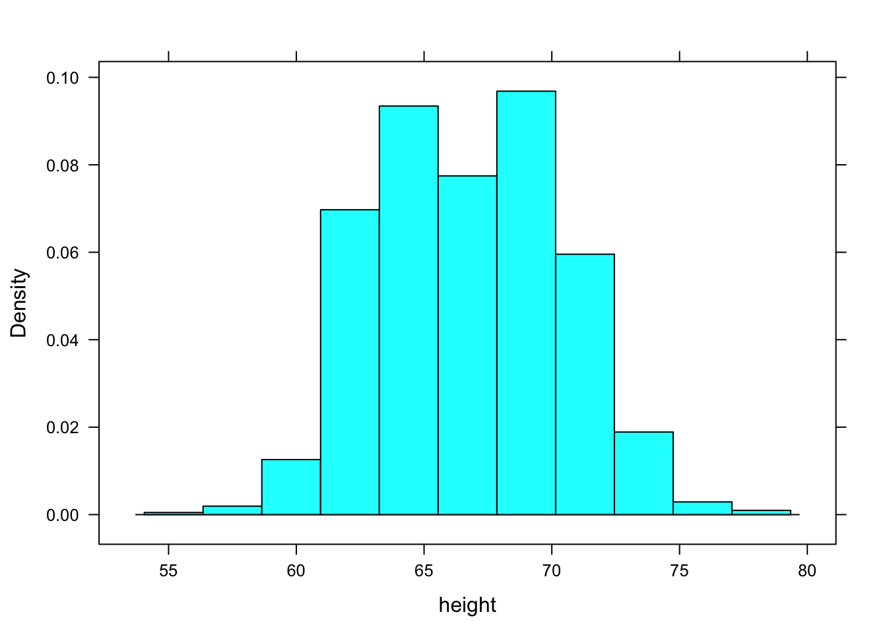
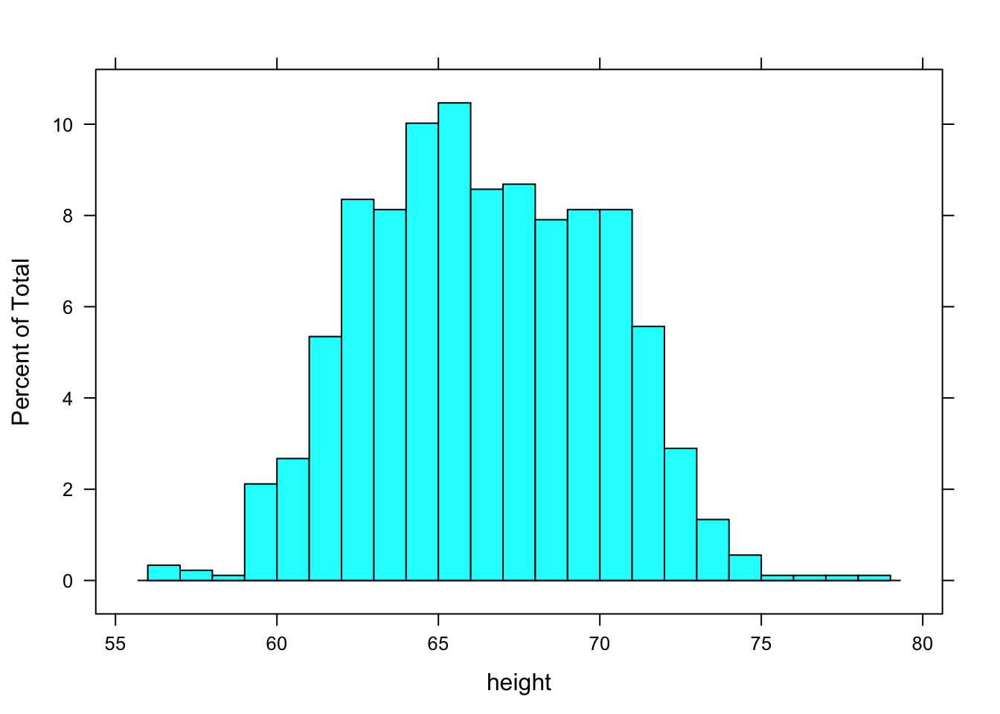
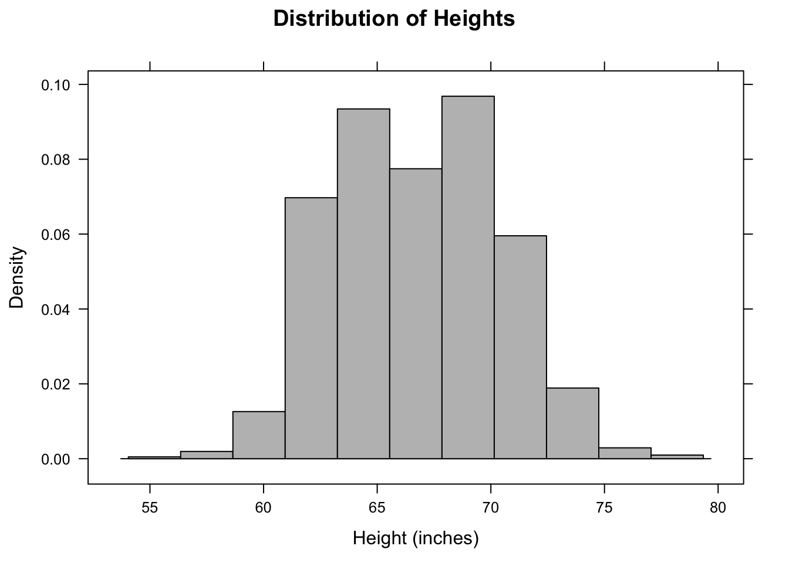
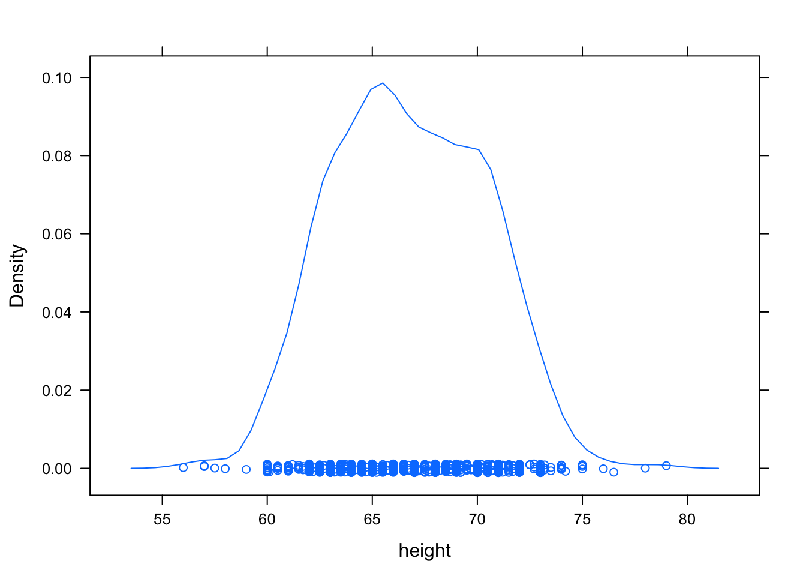
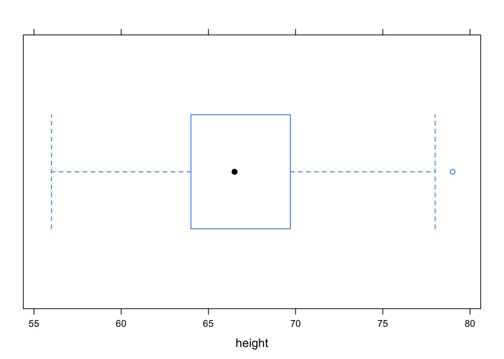
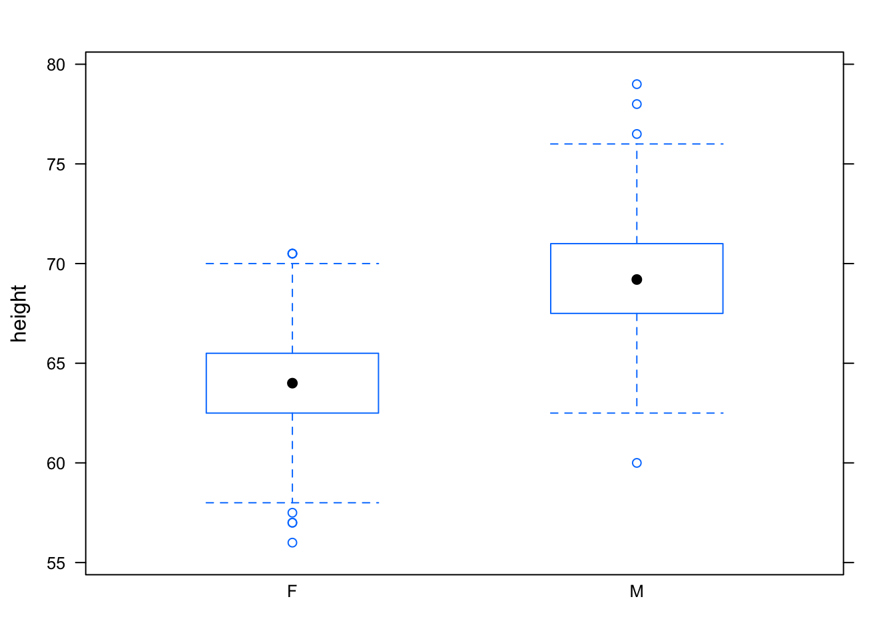

Chapter 3 Describing Variation
As a setting to illustrate computer techniques for describing variability, take the data that Galton collected on the heights of adult children and their parents. These data, in a modern case/variable format, are made available as Galton when the mosaic package is used.
require(mosaic)
Galton = read.csv("http://tiny.cc/mosaic/galton.csv")
# As it happens, Galton is already loaded by mosaic from the mosaicData package.
# So you don't need the read.csv(); we use it here for the sake of generality.3.1 Simple Statistical Calculations
Simple numerical descriptions are easy to compute. Here are the mean, median, standard deviation and variance of the children’s heights (in inches).
# [Always a space on both sides of an operator]
mean( ~ height, data = Galton)## [1] 66.76069median( ~ height, data = Galton)## [1] 66.5sd( ~ height, data = Galton)## [1] 3.582918var( ~ height, data = Galton)## [1] 12.8373Notice that the variance function var() returns the square of the standard deviation produced by sd(). Having both is merely a convenience.
Why the tilde? In all these commands the first argument (~ height) is recognized by the interpreter as a model formula. Model language involves the tilde, and the tilde must be followed by a variable.
3.1.1 Aside: The “base” versions
The built-in, base R version of commands such as
mean(),median(),sd(), and so on (that is, in their default non-mosaicform) take numeric vectors (columns of numbers) as arguments, but then the convenience of thedata =designation is not available. For instance:
mean(Galton$height)## [1] 66.76069median(Galton$height)## [1] 66.5As we have seen before, R’s model language also allows more sophisticated model arguments, as in
median(height ~ sex, data = Galton)## F M
## 64.0 69.2A percentile tells where a given value falls in a distribution. For example, a height of 63 inches is on the short side in Galton’s data:
pdata( ~ height, 63, data = Galton)## [1] 0.1915367Only about 19 % of the cases have a height less than or equal to 63 inches. The pdata operator takes one or more values as a second argument (here, 63) and finds where they fall in the distribution of values in the first argument (height).
A quantile refers to the same sort of calculation, but inverted. Instead of giving a value in the same units as the distribution, you give a probability: a number between 0 and 1. The qdata operator then calculates the value whose percentile would be that value. What’s the 20th percentile of Galton’s heights?
qdata( ~ height, 0.2, data = Galton)## p quantile
## 0.2 63.5Remember that the probability is given as a number between 0 and 1, so use 0.50 to indicate that you want the value which falls at the 50th percentile.
qdata( ~ height, 0.5, data = Galton)## p quantile
## 0.5 66.5median( ~ height, data = Galton)## [1] 66.5- The 25th and 75th percentile in a single command — in other words, the 50 percent coverage interval:
# [Note: formula should be first argument.]
qdata( ~ height, c(0.25, 0.75), data = Galton)## quantile p
## 25% 64.0 0.25
## 75% 69.7 0.75- The 2.5th and 97.5th percentile — in other words, the 95 percent coverage interval:
qdata( ~ height, c(0.025, 0.975), data = Galton)## quantile p
## 2.5% 60 0.025
## 97.5% 73 0.975The interquartile range is the width of the 50 percent coverage interval:
IQR( ~ height, data = Galton)## [1] 5.7Some other useful operators are min(), max(), and range().
3.2 Simple Statistical Graphics
There are several basic types of statistical graphics to display the distribution of a variable: histograms, density plots, and boxplots. These are easily mastered by example.
3.2.1 Histograms and Distributions
Constructing a histogram involves dividing the range of a variable up into bins and counting how many cases fall into each bin. This is done in an almost entirely automatic way:
histogram( ~ height, data = Galton)
When constructing a histogram, R makes an automatic but sensible choice of the number of bins. If you like, you can control this yourself. For instance:
histogram( ~ height, data = Galton, breaks = 25 )
The horizontal axis of the histogram is always in the units of the variable. For the histograms above, the horizontal axis is in “inches” because that is the unit of the height variable.
The vertical axis is conventionally drawn in one of three ways: controlled by an optional argument named type.
- Absolute Frequency or Counts
A simple count of the number of cases that falls into each bin. This mode is set with type="count" as in
histogram( ~ height, data = Galton, type = "count")Figures/variation-var3-hist
- Relative Frequency
The vertical axis is scaled so that the height of the bar give the proportion of cases that fall into the bin. This is the default, that is, this is the type if you don’t specify type in the command.
- Density
The vertical axis area of the bar gives the relative proportion of cases that fall into the bin. Set type = "density". In a density plot, areas can be interpreted as probabilities and the area under the entire histogram is equal to 1.
Other useful optional arguments set the labels for the axes and the graph as a whole and color the bars. For example,
histogram( ~ height, data = Galton, type = "density",
xlab="Height (inches)",
main="Distribution of Heights",
col="gray")
The above command is so long that it has been broken into several lines for display purposes. R ignores the line breaks, holding off on executing the command until it sees the final closing parentheses. Notice the use of quotation marks to delimit the labels and names like "blue". Also note the + signs that appear in place of the prompt (>) on new lines when the command is still incomplete. If a plus sign appears when you are expecting a prompt, R is telling you that the previous command is incomplete. You need to complete it before you get back to the prompt.
3.2.2 Density Plots
A density plot avoids the need to create bins and plots out the distribution as a continuous curve. Making a density plot involves two operators. The density operator performs the basic computation which is then displayed using either the plot or the lines operator. For example:
densityplot( ~ height, data = Galton) 
If you want to suppress the rug-like plotting of points at the bottom of the graph, use densityplot( ~ height, data = Galton, plot.points = FALSE).
3.2.3 Box-and-Whisker Plots
Box-and-whisker plots are made with the bwplot command:
bwplot( ~ height, data = Galton)
The median is represented by the heavy dot in the middle. Outliers, if any, are marked by dots outside the whiskers.
The real power of the box-and-whisker plot is for comparing distributions. This will be raised again more systematically in later chapters, but just to illustrate, here is how to compare the heights of males and females:
bwplot(height ~ sex, data = Galton)
3.3 Displays of Categorical Variables
For categorical variables, it makes no sense to compute descriptive statistics such as the mean, standard deviation, or variance. Instead, look at the number of cases at each level of the variable.
tally( ~ sex, data = Galton)##
## F M
## 433 465Proportions can be found by dividing the tallies by the total:
tally( ~ sex, data = Galton)/nrow(Galton)##
## F M
## 0.4821826 0.5178174